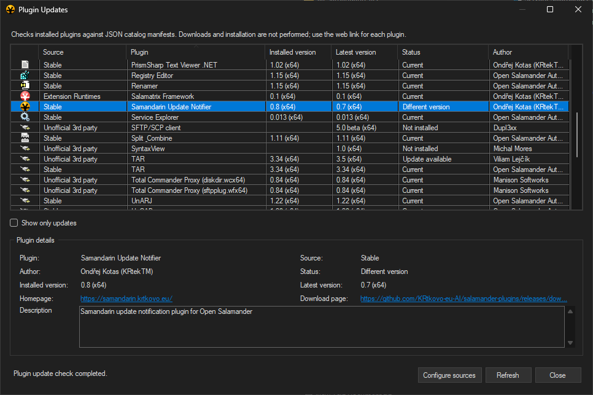

File management
Paths, Copy and Move scheduling, archives, mounted volumes, catalogs, autocomplete, and safer deletion.
Explore file managementUnofficial community fork
It evolves the original project with enhancements and new features while staying compatible with the upstream code and plugin ecosystem.
Loading latest GitHub release data...

Samandarin 0.15 combines modern file operations, flexible panels, integrated viewers, extensibility, and a stronger configuration and package trust model.
Paths, Copy and Move scheduling, archives, mounted volumes, catalogs, autocomplete, and safer deletion.
Explore file managementTabs, detached windows, histories, appearance, metadata, search results, icons, and shell integration.
Explore interface and panelsInternal, Prism, WebView2, and PictView viewers plus Salamatrix tools and system panels.
Explore viewers and extensionsPortable settings, configuration management, translations, signed binaries, and trusted installation.
Explore configuration and securityPlugin catalog sources:
- Stable: https://samandarin.krtkovo.eu/catalogs/plugins-stable.json
- Unofficial 3rd party: https://samandarin.krtkovo.eu/catalogs/plugins-unofficial.json
- Extension Runtimes: https://samandarin.krtkovo.eu/catalogs/extension-runtimes.json
Catalog entries can provide their own icons. Plugin Updates can download and install plugin, runtime, or extension packages automatically, resolve required catalog dependencies, and offer them for installation together.
Explore the available plugins in Plugin catalog overview or directly in the Salamander application via the Plugin Updates window in the Samandarin Update Notifier plugin.

Open Salamander: Samandarin is introduced by Ondřej Kotas (KRtekTM). Instead of coming from a traditional C++ background, Ondřej is a C# developer and QA test/automation & AI specialist who uses OpenAI Codex to rapidly prototype and implement new ideas. The fork exists so AI-written code can evolve separately without risking the quality of the upstream project while development practices mature.
The “Samandarin” name is a three-way pun that pays homage to the Salamander legacy:
Together they promise the same Salamander DNA with a spicy hint of danger.
Samandarin writes its configuration to a dedicated registry hive named "Open Salamander Samandarin" to avoid interfering with an official installation. If you previously tried the "tabbed panels PoC" pre-release, manually clean the legacy registry keys because that build still stored settings in the original location.
The name Servant Salamander came from a brainstorming session between Petr Šolín and his friend Pavel Schreib. At the time, the best-known file managers were the aging Norton Commander and the increasingly popular Windows Commander. They wondered why a file manager should be called a commander at all: a good file manager serves its users rather than commands them. That idea led to the name Servant Salamander.
The original version of Servant Salamander was developed by Petr Šolín while he was studying at the Czech Technical University. He released it as freeware in 1997. After graduating, Petr Šolín founded Altap together with Jan Ryšavý. In 2001, they released the first shareware version of the program. In 2007, the project was renamed Altap Salamander with the release of version 2.5. Many other programmers and translators have contributed to the project over the years. In 2019, Altap was acquired by Fine. After the acquisition, Altap Salamander 4.0 was released as freeware. In 2023, the source code was released under the GPLv2 license as Open Salamander 5.0.
The Samandarin fork continues this story by blending the original Salamander DNA with AI-driven enhancements, keeping development moving while inviting adventurous contributors to explore and extend the project.
We would like to thank Fine for making the open-source release of Salamander possible.
Open Salamander is open-source software licensed under GPLv2 or later.
Some individual files and libraries use different but compatible licenses.